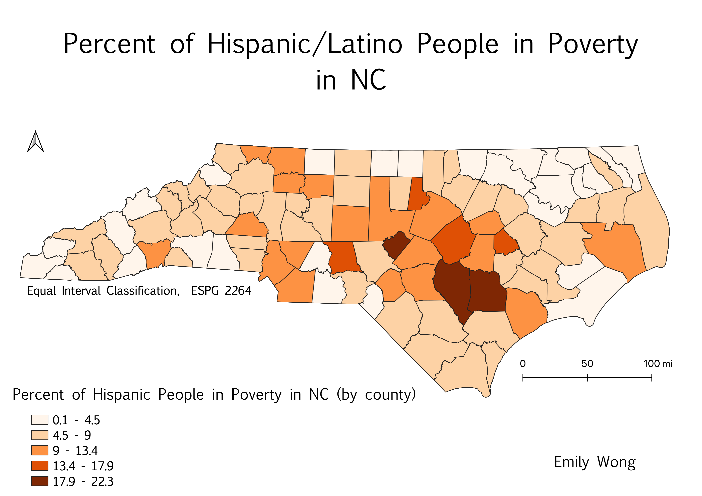

Homework 6.2: Percent of Hispanic/Latino People in Poverty in North Carolina
Emily Wong
For this project, I used 2019 ACS data about poverty in North Carolina counties. The data included the total number of people in poverty, as well as the number of people of different races in poverty in North Carolina. I then used this data and divided the number of Hispanic people in poverty by the total number of people in poverty (for NC), and found a ratio of the percent of Hispanic people in poverty in North Carolina, by county.

Data used for this project
Link to cleaned CSV dataset
Link to geoJSON